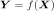
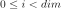
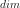
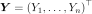
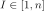
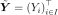
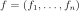
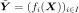

RandomVector¶
-
class
RandomVector(*args)¶ Random vectors.
- Parameters
- distribution
Distribution Distribution of the
UsualRandomVectorto define.
- distribution
See also
Notes
A
RandomVectorprovides at least a way to generate realizations.Methods
getAntecedent(self)Accessor to the antecedent RandomVector in case of a composite RandomVector.
getClassName(self)Accessor to the object’s name.
getCovariance(self)Accessor to the covariance of the RandomVector.
getDescription(self)Accessor to the description of the RandomVector.
getDimension(self)Accessor to the dimension of the RandomVector.
getDistribution(self)Accessor to the distribution of the RandomVector.
getDomain(self)Accessor to the domain of the Event.
getFunction(self)Accessor to the Function in case of a composite RandomVector.
getId(self)Accessor to the object’s id.
getImplementation(self, \*args)Accessor to the underlying implementation.
getMarginal(self, \*args)Get the random vector corresponding to the
 marginal component(s).
marginal component(s).getMean(self)Accessor to the mean of the RandomVector.
getName(self)Accessor to the object’s name.
getOperator(self)Accessor to the comparaison operator of the Event.
getParameter(self)Accessor to the parameter of the distribution.
getParameterDescription(self)Accessor to the parameter description of the distribution.
getRealization(self)Compute one realization of the RandomVector.
getSample(self, size)Compute realizations of the RandomVector.
getThreshold(self)Accessor to the threshold of the Event.
isComposite(self)Accessor to know if the RandomVector is a composite one.
setDescription(self, description)Accessor to the description of the RandomVector.
setName(self, name)Accessor to the object’s name.
setParameter(self, parameters)Accessor to the parameter of the distribution.
-
__init__(self, *args)¶ Initialize self. See help(type(self)) for accurate signature.
-
getAntecedent(self)¶ Accessor to the antecedent RandomVector in case of a composite RandomVector.
- Returns
- antecedent
RandomVector Antecedent RandomVector
 in case of a
in case of a
CompositeRandomVectorsuch as:
.
- antecedent
-
getClassName(self)¶ Accessor to the object’s name.
- Returns
- class_namestr
The object class name (object.__class__.__name__).
-
getCovariance(self)¶ Accessor to the covariance of the RandomVector.
- Returns
- covariance
CovarianceMatrix Covariance of the considered
UsualRandomVector.
- covariance
Examples
>>> import openturns as ot >>> distribution = ot.Normal([0.0, 0.5], [1.0, 1.5], ot.CorrelationMatrix(2)) >>> randomVector = ot.RandomVector(distribution) >>> ot.RandomGenerator.SetSeed(0) >>> print(randomVector.getCovariance()) [[ 1 0 ] [ 0 2.25 ]]
-
getDescription(self)¶ Accessor to the description of the RandomVector.
- Returns
- description
Description Describes the components of the RandomVector.
- description
-
getDimension(self)¶ Accessor to the dimension of the RandomVector.
- Returns
- dimensionpositive int
Dimension of the RandomVector.
-
getDistribution(self)¶ Accessor to the distribution of the RandomVector.
- Returns
- distribution
Distribution Distribution of the considered
UsualRandomVector.
- distribution
Examples
>>> import openturns as ot >>> distribution = ot.Normal([0.0, 0.0], [1.0, 1.0], ot.CorrelationMatrix(2)) >>> randomVector = ot.RandomVector(distribution) >>> ot.RandomGenerator.SetSeed(0) >>> print(randomVector.getDistribution()) Normal(mu = [0,0], sigma = [1,1], R = [[ 1 0 ] [ 0 1 ]])
-
getDomain(self)¶ Accessor to the domain of the Event.
- Returns
- domain
Domain Describes the domain of an event.
- domain
-
getFunction(self)¶ Accessor to the Function in case of a composite RandomVector.
- Returns
- function
Function Function used to define a
CompositeRandomVectoras the image through this function of the antecedent:
.
- function
-
getId(self)¶ Accessor to the object’s id.
- Returns
- idint
Internal unique identifier.
-
getImplementation(self, *args)¶ Accessor to the underlying implementation.
- Returns
- implImplementation
The implementation class.
-
getMarginal(self, *args)¶ Get the random vector corresponding to the
marginal component(s).- Parameters
- iint or list of ints,

Indicates the component(s) concerned.

is the dimension of the RandomVector.
- iint or list of ints,
- Returns
- vector
RandomVector RandomVector restricted to the concerned components.
- vector
Notes
Let’s note

a random vector and
a set of indices. If is a
is a
UsualRandomVector, the subvector is defined by
. If is a
CompositeRandomVector, defined by with
, some scalar functions, the subvector is
some scalar functions, the subvector is

.Examples
>>> import openturns as ot >>> distribution = ot.Normal([0.0, 0.0], [1.0, 1.0], ot.CorrelationMatrix(2)) >>> randomVector = ot.RandomVector(distribution) >>> ot.RandomGenerator.SetSeed(0) >>> print(randomVector.getMarginal(1).getRealization()) [0.608202] >>> print(randomVector.getMarginal(1).getDistribution()) Normal(mu = 0, sigma = 1)
-
getMean(self)¶ Accessor to the mean of the RandomVector.
- Returns
- mean
Point Mean of the considered
UsualRandomVector.
- mean
Examples
>>> import openturns as ot >>> distribution = ot.Normal([0.0, 0.5], [1.0, 1.5], ot.CorrelationMatrix(2)) >>> randomVector = ot.RandomVector(distribution) >>> ot.RandomGenerator.SetSeed(0) >>> print(randomVector.getMean()) [0,0.5]
-
getName(self)¶ Accessor to the object’s name.
- Returns
- namestr
The name of the object.
-
getOperator(self)¶ Accessor to the comparaison operator of the Event.
- Returns
- operator
ComparisonOperator Comparaison operator used to define the
Event.
- operator
-
getParameter(self)¶ Accessor to the parameter of the distribution.
- Returns
- parameter
Point Parameter values.
- parameter
-
getParameterDescription(self)¶ Accessor to the parameter description of the distribution.
- Returns
- description
Description Parameter names.
- description
-
getRealization(self)¶ Compute one realization of the RandomVector.
- Returns
- aRealization
Point Sequence of values randomly determined from the RandomVector definition. In the case of an event: one realization of the event (considered as a Bernoulli variable) which is a boolean value (1 for the realization of the event and 0 else).
- aRealization
See also
Examples
>>> import openturns as ot >>> distribution = ot.Normal([0.0, 0.0], [1.0, 1.0], ot.CorrelationMatrix(2)) >>> randomVector = ot.RandomVector(distribution) >>> ot.RandomGenerator.SetSeed(0) >>> print(randomVector.getRealization()) [0.608202,-1.26617] >>> print(randomVector.getRealization()) [-0.438266,1.20548]
-
getSample(self, size)¶ Compute realizations of the RandomVector.
- Parameters
- nint,

Number of realizations needed.
- nint,
- Returns
- realizations
Sample n sequences of values randomly determined from the RandomVector definition. In the case of an event: n realizations of the event (considered as a Bernoulli variable) which are boolean values (1 for the realization of the event and 0 else).
- realizations
See also
Examples
>>> import openturns as ot >>> distribution = ot.Normal([0.0, 0.0], [1.0, 1.0], ot.CorrelationMatrix(2)) >>> randomVector = ot.RandomVector(distribution) >>> ot.RandomGenerator.SetSeed(0) >>> print(randomVector.getSample(3)) [ X0 X1 ] 0 : [ 0.608202 -1.26617 ] 1 : [ -0.438266 1.20548 ] 2 : [ -2.18139 0.350042 ]
-
getThreshold(self)¶ Accessor to the threshold of the Event.
- Returns
- thresholdfloat
Threshold of the
Event.
-
isComposite(self)¶ Accessor to know if the RandomVector is a composite one.
- Returns
- isCompositebool
Indicates if the RandomVector is of type Composite or not.
-
setDescription(self, description)¶ Accessor to the description of the RandomVector.
- Parameters
- descriptionstr or sequence of str
Describes the components of the RandomVector.
-
setName(self, name)¶ Accessor to the object’s name.
- Parameters
- namestr
The name of the object.
-
setParameter(self, parameters)¶ Accessor to the parameter of the distribution.
- Parameters
- parametersequence of float
Parameter values.